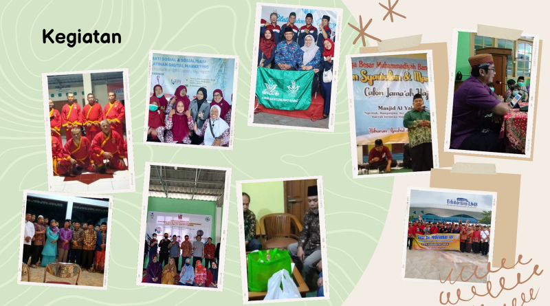
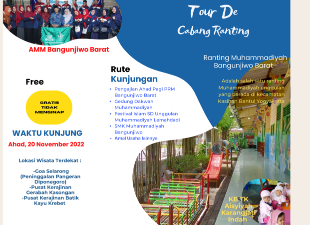
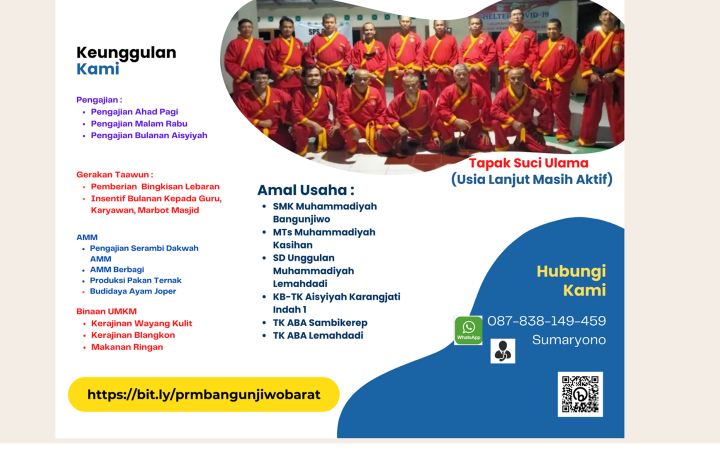
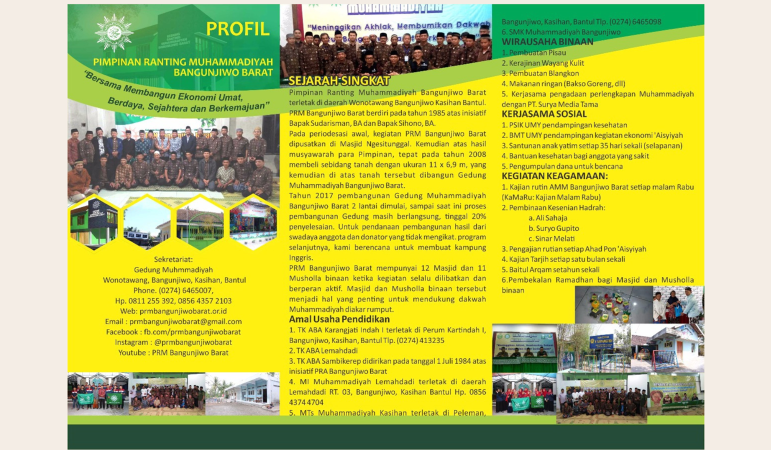
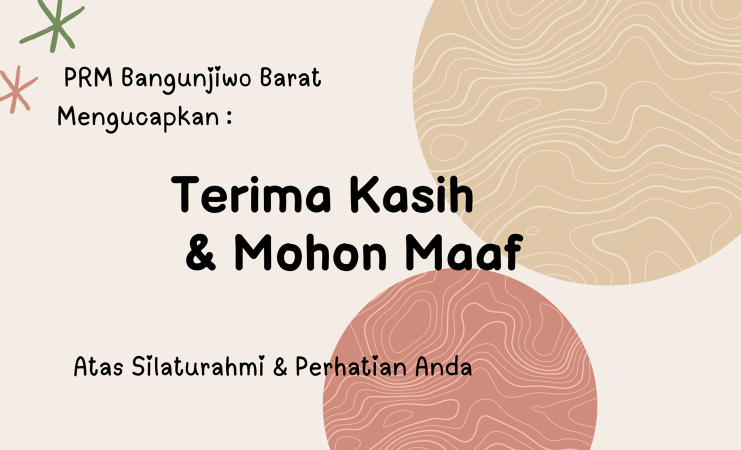

Arsip Resmi & Dokumentasi Ranting
Materi Presentasi Tour De Cabang Ranting
Page details
Dokumentasi Visual Asli
Klik foto untuk memperbesar
Galeri Foto & Dokumentasi (6 Foto)
Perbesar

Perbesar
Perbesar
Perbesar
Perbesar
Perbesar
Sumber: Dokumentasi Resmi PRM Bangunjiwo Barat
← Kembali ke Beranda